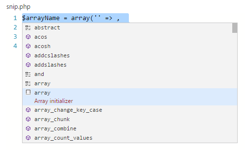
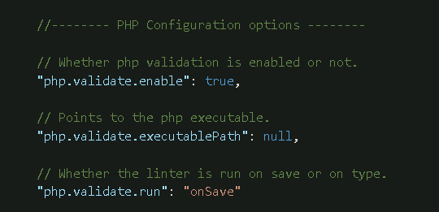

Visual Studio Code is a great editor for PHP development. You get features like syntax highlighting and bracket matching, IntelliSense (code completion), and snippets out of the box and you can add more functionality through community created VS Code extensions.
PHP Extensions
There are many PHP language extensions available on the VS Code Marketplace and more are being created. You can search for PHP extensions from within VS Code by running the Extensions: Install Extension command (⇧⌘P (Windows, Linux Ctrl+Shift+P) and type ext install) then filter the extensions drop down list by typing php.
Tip: The extensions shown above are dynamically queried. Click on an extension tile above to read the description and reviews to decide which extension is best for you. See more in the Marketplace.
Tip: The following setting allows to disable the built-in PHP completions in favor of proposals created by installed PHP extensions.
php.suggest.basic: Configures if the built-in PHP language suggestions are enabled. Enabled by default.
Snippets
Visual Studio Code includes a set of common snippets for PHP. To access these, hit ⌃Space (Windows, Linux Ctrl+Space) to get a context specific list.

Linting
VS Code uses the official PHP linter (php -l) for PHP language diagnostics. This allows VS Code to stay current with PHP linter improvements.
There are three settings to control the PHP linter:
php.validate.enable: controls whether to enable PHP linting at all. Enabled by default.php.validate.executablePath: points to the PHP executable on disk. Set this if the PHP executable is not on the system path.php.validate.run: controls whether the validation is triggered on save (value:"onSave") or on type (value:"onType"). Default is on save.

To set the PHP executable path, open your User or Workspace Settings and add the php.validate.executablePath:
|
Debugging
PHP debugging with XDebug is supported through a PHP Debug extension. Follow the extension’s instructions for configuring XDebug to work with VS Code.
Next Steps
Read on to find out about:
- Extension Marketplace - Browse the extensions others have shared
- Debugging - Learn more about VS Code debugging